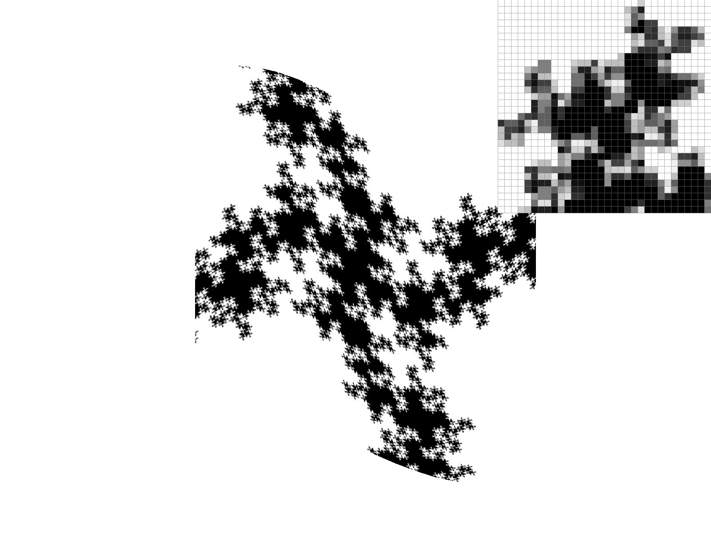

Overview
I have implemented a rasterizer of SVG vector graphics on the basis of triangle raterization and barycentric interpolation. Two algorithms were implemented for triangle rasterization: bounding-box algorithm and line-by-line algorithm, in which the latter one is found to be 3.4 times faster than the former one. Two sampling methods were implemented to reduce aliasing arising from a limited sampling frequency, including supersampling and jittered sampling. Three transforms were implemented to handle translation, scaling, and rotation, such that we could manipulate and modify our vector graphics. Linear algebra was used for optimized performance and generality. Two additional GUI features were added, such that the viewport could be rotated 90˚ clockwise or counterclockwise.
Continuing with this, a barycentric interpolation method was implemented to handle coloring and texture mapping in locations inside a raterization triangle. For texture mapping, two algorithms were implemented for the decision of texel value at each location in screen space. First, nearest-pixel sampling was constructed. Second, bilinear interpolation was implemented for a better sharpness and more truthful representation of the texture. Level sampling with mipmaps for texture mapping was implemented for treating situations where differential areas on the screen space correspond to a different area in texture space, causing aliasing and/or a lack of sharpness. Hence, each pixel location on screen space is independently determined with a mipmap level and a corresponding degree of filtering from the full-resolution texture image, using its corresponding differential area in texture space. Anisotropic filtering was also implemented to improve the over-blurriness in high |(du/dx), (dv/dx)| or |(du/dy), (dv/dy)| areas prevalent in trilinear filtering.
It was interesting to obtain a hands-on experience of rasterizing triangles and implementing basic antialising algorithms. It fascinates me as to the amount of details it would require for a triangle to correctly rasterize without error. Edge cases have to be meticulously dealt with to cover all possibilities. Throughout debugging, vastly different (and hence, wrong) results arise from small errors like missing a +1 or +0.5. Barycentric interpolation is intuitive, yet it is important to recognize the inherent assumptions of whether we are labelling the vertices of the triangles clockwise and counterclockwise, and how do we maintain consistency without losing generality and scalability. Finally, the most interesting algorithm in this homework is level sampling, where we can see the improvement in graphics quality by implementing mipmap, yet we are able to recognize the computation cost that comes with it. We are also able to realize the various different ways of texture mapping, including anisotropic filtering and summed area tables, providing us a broader sense of each algorithm's pros and cons.
Section I: Rasterization
Part 1: Rasterizing single-color triangles
I have implemented two ways of rasterization of triangles. The first way is to find a bounding box of the triangle, and then to test every point inside that box whether it is inside or outside the triangle.
In this bounding box algorithm, I first determine whether the vertices of the triangle (x0, y0), (x1, y1), (x2, y2) are labelled in a counterclockwise fashion. I identified this by seeing whether the cross product of (x1-x0, y1-y0) x (x2-x1, y2-y1) is positive. If it is positive, the vertices are labelled counterclockwise. If it is negative, the vertices are labelled clockwise, and hence I swap (x1, y1) with (x2, y2) to make it clockwise. (If the cross product is zero, the triangle is a part of a line and does not need to be rasterized.) This could be found by the value det = x0*y1 + x1*y2 + x2*y0 - x2*y1 - x1*y0 - x0*y2. After that, I calculate the coordinates of the bounding box (boundx_min, boundy_min) and (boundx_max, boundy_max). And then, I run a nested for loop to test whether each point inside this bounding box (including the boundaries of the box) is inside the triangle by the method introduced in lecture 2. (this method assumes a counterclockwise labelling direction of the vertices of the triangle, and hence we have to do the aforementioned test and swap.) Note that the actual testing location used for pixel (x, y) is (x + 0.5, y + 0.5). If a certain point (x + 0.5, y + 0.5) is found to be larger or equal to L0, L1, L2 simultaneously, it is inside the triangle and we call fill_pixel() to fill that pixel (x, y) with the designated color. (The equal condition is for when a point lies on the edges of the triangle, and as required in this spec, they have to be rasterized as well.) Here, each pixel is only sampled once according to the spec.
Extra credit:
In rasterize_triangle_fast(), I have implemented an algorithm that is 3.6 times faster than the bounding box algorithm. Every triangle can be divided into at most two triangles, where a horizontal, parallel to x-axis edge was added to slice the triangle into two halves. (If the triangle already has a horizontal, parallel to x-axis edge, then no slicing is done.) And by sorting the vertices in increasing order of their y-coordinate value, i.e. (x0, y0), (x1, y1), (x2, y2) satisfying y0 <= y1 <= y2, we could find the newly added vertex on the same horizontal line as y1. By running a for loop in increasing y coordinate from y0, we could determine (xL, y), and (xR, y) that are on the edges of the triangle and on the same horizontal line as y. Then, we rasterize all points (x, y) for x >= xL and x <= xR. After we are done with the upper half of the triangle, we continue with the lower half in a similar fashion.
For rasterizing 124 triangles in svg/basic/test6.svg, the bounding-box algorithm on average takes 2.28E-05 seconds to rasterize one triangle. The optimized line-by-line algorithm takes 6.71E-06 seconds to rasterize one triangle. This method is 3.6 times faster than the bounding box algorithm because it does not need to compute whether a point is inside the triangle, once we have computed the boundary vertices (xL, y), and (xR, y). Any point in between is guaranteed to be inside the triangle. This saves a lot of computational time and caused the rasterization to be done way faster.
Here is an example 2x2 gridlike structure using an HTML table. Each tr is a row and each td is a column in that row. You might find this useful for framing and showing your result images in an organized fashion.

|

|

|

|
Part 2: Antialiasing triangles
Building upon the bounding-box algorithm, I implemented supersampling by calculating the corresponding location of the bounding box (sboundx_min, sboundy_min), (sboundx_max, sboundy_max), by simply scaling all values by multiplying them with sqrt(sample_rate). This is because when there is a supersampling rate of 4, it actually means for each pixel, it was divided into 4 subpixels, hence on each side there is a multiple of sqrt(4) = 2 points to sample. A procedure very similar to the original bounding-box algorithm follows, where a nested for loop goes over (x, y) inside the box, and tests whether it is inside the triangle or not. The only additional step is the conversion from (sx, sy) to (x, y): x = (sx + 0.5)/sqrt(sample_rate) and y = (sy + 0.5)/sqrt(sample_rate), because right now (sx, sy) denotes the (row, col) of the subdivided screen space, where the number of rows and columns are multiplied by a factor of sqrt(sample_rate). Such conversion can take us from the pixel coordinate to the actual physical location of the center of the subpixel on screen space, which should remain the same regardless of sampling rate.
The indexing of the sample buffer in fill_pixel() was also modified to sy * width * sqrt(sample_rate) + sx for a point at (sx, sy). This is due to the increase in number of sample in each row by sqrt(sample_rate). The new location of the pixels are handled by passing in the updated (sx, sy).
In resolve_to_framebuffer(), for a pixel (x, y), a nested for loop is used to traverse the entire sample_rate subpixels dividing the original pixel, and calculating an average value of rgb values across these samples. Indexing is carefully taken care of.
Supersampling is useful because it approximates the fraction of area that each pixel area is being included inside the triangle. When the sample rate is 1, the pixel is either fully that designated color (e.g. red, (1,0,0)) or white (0, 0, 0). Hence, the boundary is abrupt and jaggies might result as some edges are oblique. With an increased sample rate, we can better approximate how many of the subpixels are included inside the triangle, and how many are outside the triangle. And then, we fill the pixel with only that fraction of the designated color. This creates a smooth boundary between inside and outside the triangle, and jaggies are less prone to result due to the capability of representing intermediate values now. Antialiasing is done this way by better approximating the fractional area that each pixel has inside the triangle.
|
|
|
|
|
|
We can see that aliasing occurs for sample rate = 1, since each pixel is either fully red or fully white. When we increase the sample rate to 4, the aliasing decreased as the corner collectively becomes dimmer, representing the diminishing area at sharp corner. Also, the aliasing effect of red pixels separating from the main triangle is reduced, as there is more subpixels to gauge the rate of convergence of the two edges at the corner. However, a single, faint pixel can still be seen at the very right, separated from the rest. At sample rate = 9, the antialiasing is increased, as each row is seen with a broader, slower, and hence smoother fade out to the outside of the triangle (from the red parts to the white parts). However, there is still a separating pixel problem, but is not very visible if not inspected carefully. At sample rate = 16, we can see an even slower, smoother gradient from red to white, and the entire triangle is connected without the strange aliasing effect. Antialiasing increases with increasing sample rate.
Extra credit:
I have also implemented the jittered antialiasing method in rasterize_triangle_jittered(). The algorithm uses the same subpixels as those in supersampling, but the sampling locations are not the center of the subpixel box, but chosen at random uniformly distributed over its range. The same procedure as supersampling follows, where the pixel values are saved to sample_buffer, and resolved into framebuffer via averaging.
|
|
|
|
|
|
Compared to supersampling, where the behavior at each sampling rate is more well-behaved and predictable, the effect of jittered sampling is less predictable due to the random process that selects a point to rasterize. Noticeably at sample rate = 4, a singularity occurs in the supposedly smooth part near the corner of the triangle, where it is abruptly more red than the others around it. This might be due to the occurrence of random samples all falling inside the triangle, giving a high averaged value in the resulting pixel color. However, at a sample rate higher than 4, there are not much noticeable difference between jittered sampling and super sampling, due to the smaller subpixel sizes, confining the random behavior to be further localized. A smoothing effect is created, just like in supersampling. Jittered sampling could be used, when after we supersample, aliasing still occurs (due to the inherent high frequency domain in the underlying vector graphic). And raising the sampling rate is not a viable option, possibly due to high computational burden. Jittered sampling could use a lower sampling rate to achieve a similar result as supersampling with a higher sampling rate, giving the algorithm a runtime advantage.
Part 3: Transforms
I wanted cubeman to have quads and not just stick figure legs so I rotated the quad by 45 degrees and turned them to rhombuses. And finally for his left feet, I rotated it 45 degrees before its scaling function. This way his stick figure rectangle feet is rotated and he looks like he had an ankle break.
Extra credit:
I have implemented two more GUI features in drawrend: a key "R" for rotating the entire viewport by 90 degrees clockwise, and a key "E" for rotating the entire viewport by 90 degrees counterclockwise. I implemented this by initiating a translation matrix = Matrix3x3(1, 0, -(width - scale) / 2, 0, 1, -(height - scale) / 2, 0, 0, 1), where scale is the minimum of (width, height), which takes the cubeman graphic back to the origin located at the top left corner. Then, a rotation matrix = Matrix3x3(0, -1, scale, 1, 0, 0, 0, 0, 1) rotates the cubeman by 90 degrees clockwise, and translating the cubeman graphic to the right by scale amount, such that its top left corner coincides with the viewport's top left corner again. Then, the inverse of the translation matrix could be used to take the cubeman figure back to the center of the frame. I multiplied these matrices to ndc_to_screen in the order of translate.inv()*rot*translate*ndc_to_screen, realizing the 90 degree clockwise rotation. The 90 degrees counterclockwise rotation is the same, except the rotation matrix becomes Matrix3x3(0, 1, scale, -1, 0, 0, 0, 0, 1).

|
|
Section II: Sampling
Part 4: Barycentric coordinates
Barycentric coordinates is a coordinate system in which (alpha, beta, gamma) denote the fractional distance a point is from the opposite edge to a vertex compared to the distance this vertex is from its opposite edge. Label a triangle with vertices A, B, and C. Alpha would mean the distance the point (x, y) is from the edge BC (the edge opposite to A) is alpha times the distance the edge BC is from vertex A. Thus, we can denote all points inside a triangle with (alpha, beta, gamma), with all three values being non-negative. We can use these weights to interpolate colors that are defined on each vertex.

Part 5: "Pixel sampling" for texture mapping
In rasterize_textured_triangle(), the procedure reuses a lot from rasterize_triangle(), testing if a point is inside a triangle or not. In this procedure, if a point is inside the triangle, the procedure calls barycentric() with arguments (x0, y0, x1, y1, x2, y2, x, y), and returns (alpha, beta, gamma) for the current location in screen space (x, y). Then, the procedure determines the corresponding location in texture space (u, v), based on the information given as parameters to this function (u0, v0, u1, v1, u2, v2), with the vertices corresponding to each other. This enables us to call tex.sample() to find the color at location (u, v) in texture space. Then, we fill the current pixel in screen space with such color.
The (u, v) we passed into tex.sample() is a float, and hence we have two procedures sampling texture. First, we have nearest sampling, which basically determines which texel value is closest to (u, v), and so we return that color value. Second, we have bilinear sampling, where the closest 4 texels are used, and the relative distance (u, v) is from these 4 texels are calculated. The weighting is determined linearly first by linear interpolation in the x-axis, creating two resulting color values from 4. Then, a linear interpolation in the y-axis determines the color at (u, v). Hence we call this bilinear interpolation since two linear interpolations were used.
|
|
|
|
|
|
In the sample rate = 1 case, we can safely say that bilinear interpolation sampling clearly beats nearest sampling. In a region where texels tend to be high frequency (high variance locally), nearest sampling gives noisy pixels and does not represent the texture well. But bilinear sampling gives a much smoother rendering and smoothes out high frequency points and singularies by spreading them away from its center a little bit. Hence, bilinear interpolation wins over nearest sampling.
In the sample rate = 16 case, bilinear sampling is not that different from nearest sampling. Due to the sheer number of subpixels in screen space, it can already handle the averaging in screen space by taking 16 samples at each pixel. And in the corresponding texture space, 16 samples that are close by to each other are taken as well. Any high frequency features in texture space is smoothed out already by the averaging step in supersampling. Bilinear sampling tends to do the same thing, and from the pictures, we can see there are not much difference between them. Hence, we can say that when the sample rate is low, i.e. when there are no antialiasing procedures at work in screen space, deploying bilinear sampling can smooth out high frequency elements and provide a less noisy and less aliased image.
Part 6: "Level sampling" with mipmaps for texture mapping
In rasterize_textured_triangle(), we also computed (dx_u, dx_v), (dy_u, dy_v). These correspond to the uv barycentric coordinates of (x+1,y), and (x,y+1). As they get passed into the SampleParams struct sp as sp.p_uv, sp.p_dx_uv, and sp.p_dy_uv, they were taken into Texture::sample(). To calculate (dx/du, dx/dv), we subtract (u, v) from (dx_u, dx_v) inside Texture::get_level. Same for (du/dy, dv/dy) = (dy_u, dy_v) - (u, v). Then we refer to the definition of L given in lecture 5, which is equal to the larger of the magnitudes of the vector (dx/du, dx/dv) and (du/dy, dv/dy). This gives us the corresponding side length of the bounding square of the parallelogram formed by the two vectors in texture space. We find the mipmap level D by D = log2 L.
The reason we are finding the maximum magnitudes of the two vectors and hence finding the side length of a bounding square is that, we want to know how much corresponding differential area is being covered in texture space by moving one pixel to each direction in screen space. If one pixel in screen space covers a large differential area, then we need to sample the texture at a higher mipmap level, meaning it is more low-pass filtered and loses more detail in high frequency parts in the texture image. This is to avoid aliasing to happen since such a large differential area in texture space means the sample rate is low, and hence the Nyquist frequency is also low. Anything above the Nyquist freqeuency in the texture image is not going to be well resolved, causing aliasing to happen. Therefore, we want to filter out the high frequency parts and leave only the blurrier parts to avoid aliasing. The reason we chooses the maximum is that we are being conservative at estimating the sampling power of the corresponding differential area in texture space, thereby avoiding any aliasing to happen. If we do not give the largest estimate of the differential area, there might be no aliasing in one direction, yet has aliasing in a direction orthogonal to it.
Supersampling improves antialiasing power, yet decreases speed due to an increased number of subpixels to sample.
Pixel sampling using nearest sampling shows more aliasing effect, yet it is a fast method and uses minimal memory.
Pixel sampling using bilinear pixel sampling improves antialiasing power, yet it is a slower method compared to nearest sampling, since 4 texels are accessed and more calculations are done. It uses the same memory as nearest sampling as all calculations are done on the same texture image.
Level sampling provides the best antialiasing power. It is a slower method in general than pixel sampling, since it might access more than one level of mipmap, and does linear interpolation on it. It uses more memory than pixel sampling since it has to store multiple texture images to accommodate for different levels.
|
|
|
|

|
|
Extra credit:
I have also implemented anisotropic filtering. It is the block of code that is at the beginning of Texture::sample. I have left a comment saying "this is actually anisotropic filtering". I did this because I could not figure out a way to create something like "L_ANISO" such that it corresponds with the GUI key press input. I used L_ZERO as an alias to implement anisotropic filtering.
Anisotropic filtering deals with the problem that in trilinear filtering, regions with a high level is sometimes taken by a very small area in texel space due to one side of the rectangle formed by vector (du/dx, dv/dx) and vector (du/dy, dv/dy) is much longer than the other. This creates a problem where these texels simply loses all sharpness due to the high level dominated by one side, yet they can actually be rendered with a higher frequency and therefore does not have to be that blurry. Anisotropic filtering seeks to sample texels in the longer direction of the rectangle formed by vector (du/dx, dv/dx) and vector (du/dy, dv/dy).
The way I implemented this is to find out which vector is longer, i.e. whether Px = |(du/dx, dv/dx)| is larger or Py = |(du/dy, dv/dy)| is larger. Then call the ratio between the larger and the smaller N = (int)ceil(Pmax/Pmin). Then we find the nearest level D as usual. Using a for loop, if Px > Py, from i = 1 to N, we add up samples from texel at location (u+dudx*(i/(N+1)-1/2), v+dvdx(i/(N+1)-1/2)). If Py >= Px, from i = 1 to N, we add up samples from texel at location (u+dudy*(i/(N+1)-1/2), v+dvdy(i/(N+1)-1/2)). Finally, we normalize the color by dividing it by N.
This way, multiple samples are taken in the dominant direction, and so the shorter area can be used to more accurately determine the color of the final weighted texel, while averaging happens only at the longer direction. It only has to be blurry for one direction only.
|
|
|
I think at the ends of these fractals, we are able to see that this is sharper than nearest level sampling, yet smoother and less aliased than level zero sampling, regardless of the pixel sampling methods. Anisotropic filtering is slower than level 0 or nearest level sampling, because of the number of arithmetic operations it has to make for each pixel to obtain the averaging effect.
Section III: Art Competition
If you are not participating in the optional art competition, don't worry about this section!